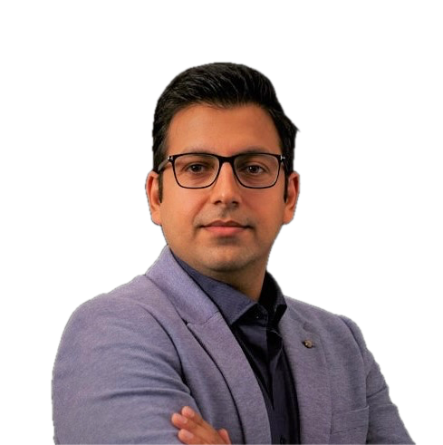
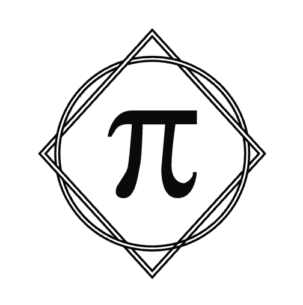
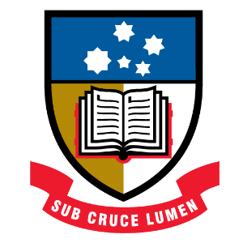
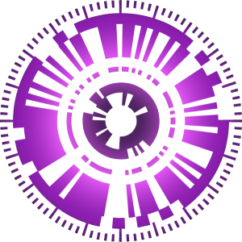
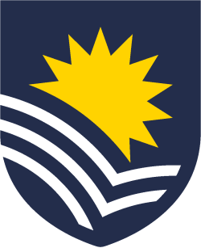
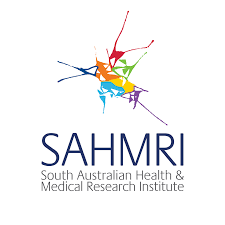

I build AI models that solve complex problems in healthcare
At a glance
Current roles
Founder of Pi MedTech, Lecturer at University of Adelaide, Research Fellow at AIML
Impact
h‑index 10 · 30+ publications in Q1 · Associate Editor at IEEE Access, member of Ethics Committee at University of Adelaide.
Funding
$1.7M+ competitive research funding
About
2025 – Current:
CTO and Founder of Pi MedTech
[We create and run smart health products that use AI to make healthcare more personal and effective.]

Pi MedTech[We create and run smart health products that use AI to make healthcare more personal and effective.]
2024 – Current:
Lecturer
[I am researching cardiology and cancer AI. I am coordinating postgrad courses such as Foundation of Computer Science and Master projects.]

School of Computer and Mathematical Sciences, The University of Adelaide
The Australian Institute for Machine Learning (AIML)[I am researching cardiology and cancer AI. I am coordinating postgrad courses such as Foundation of Computer Science and Master projects.]
2023 – 2024: Course Coordinator and Lecturer
[Developing and coordinating the Engineering Programming course, a Python course for Engineering students.]

Flinders University[Developing and coordinating the Engineering Programming course, a Python course for Engineering students.]
2021 – 2024: Research Fellow, Machine Learning Scientist
The Australian Institute for Machine Learning (AIML)
[We established Platform AI in SAHMRI in collaboration with AIML. Implemented medical AI models into SAHMRI data platforms.]
The Australian Institute for Machine Learning (AIML)

South Australian Health and Medical Research Institute (SAHMRI)[We established Platform AI in SAHMRI in collaboration with AIML. Implemented medical AI models into SAHMRI data platforms.]
2017 – 2021: Teaching staff, Research Assistant, and PhD student
The University of Adelaide
[Mathematically showed cancer vascular networks are smarter than normal human vascular networks, taking strategies from transport networks. Received Dean’s Commendation for Doctoral Thesis Excellence.]
The University of Adelaide
[Mathematically showed cancer vascular networks are smarter than normal human vascular networks, taking strategies from transport networks. Received Dean’s Commendation for Doctoral Thesis Excellence.]
Research Focus
Developing innovative machine learning methodologies for medical data — from ECG analysis and physiological signal processing to AI‑assisted document workflows and disease prediction. The goal: scalable solutions that improve healthcare delivery and outcomes.
Selected collaborations & projects
- Medtronic — ECG‑based ejection fraction inference and LV dysfunction detection (Lead/Co‑CI).
- Cardiomics dashboard — real‑time CVD insights (THRF grant).
- Oncology & Omics — microbiome and salivomics studies; cachexia risk modelling (Pfizer ASPIRE; FHMS).
Publications (selected)
- JACC Advance — Improving CVD risk prediction with ML using mental health data (2024).
- Cancers — Deep learning for breast density classification in histology (2025).
- PNAS Nexus — Network analysis of subchondral trabecular bone structures (2022).
- Communications Biology — Tumour vascular networks (2021).
- Scientific Reports — Periodicity in C‑reactive protein levels (2018) & Truels and strategies for survival (2019).
- IEEE Access — Angiogenic networks; CRP forecasting; SPR fiber sensors (2019–2020).
See the full list on Google Scholar.
Teaching & Coordination
2024–current · University of Adelaide
Foundations of Computer Science A & B (COMP SCI 7210/7211) — Course Coordinator & Lecturer (>200 students, managing 14 TAs; three teaching periods annually).
2024–2025 · University of Adelaide
Introduction to Applied Programming (COMP SCI 1015) — Course Coordinator & Lecturer (>200 students).
Research Project (Master of CS)
COMP SCI 7100A / 7100B — Course Coordinator & Lecturer (two teaching periods annually).
2023–2024 · Flinders University
Engineering Programming (ENGR 1206) — Course design & coordination; 100% student satisfaction (Sem 1, 2023).
SELT highlights: 99% “effective teacher”, 97% “overall course quality”.
Funding (selected, $1.7M+)
- Medtronic Inc. — LV dysfunction detection via external ECG (Phase 2), $431,305 (2024–2025).
- Medtronic Inc. — EF inference from ECG (Lead CI), $423,970 (2023).
- BioPlatforms Australia (SAGC) — Multi‑omics for chemo‑brain, $139,930 (2024).
- Tour De Cure (Cat 1) — RAdio‑GEnomics in paediatric brain tumours, $100,000 (2024).
- THRF — Cardiomics real‑time dashboard, $125,000 (2023).
- Pfizer ASPIRE — GDF‑15 & cachexia risk model in H&N cancer, $371,540 (2022).
- FHMS SRSS — Salivomics & treatment side‑effects, $82,125 (2022).
- CAR — Postdoc & PhD support (2021).
Awards & Recognition
- Dean’s Commendation for Doctoral Thesis Excellence — University of Adelaide.
- Global Talent (MedTech) — Distinguished Talent visa, Australian Government.
- DR Stranks Travelling Fellowship — Stony Brook University visit.
- AMSI grants; School of EEE PG support; DPP Program Scholarship (UoA, 2025).
Professional Service & Engagement
- Associate Editor, IEEE Access; active reviewer.
- Member, UoA SET Lower Risk Human Research Ethics Committee (2025– ).
- Member, IEEE & EMBS; ACAIM & PCAIM.
- Co‑founder, Plus AI (theplusai.com); organizer of Medical AI events at SAHMRI.
- Led industry collaborations with Medtronic and wearable tech firms for AI deployment.
Research Supervision
Principal supervisor for 1 PhD; co‑supervisor for 2 PhDs; mentoring 8+ Masters and 9 Honours students (many graduated; award‑winning projects and a